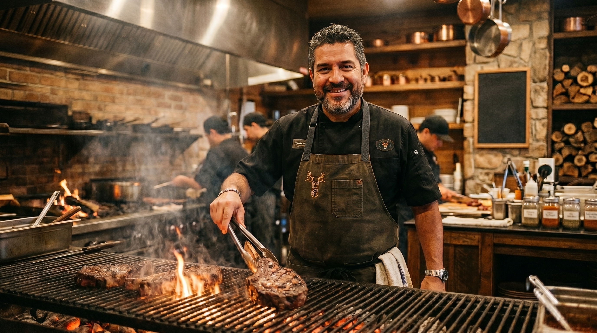
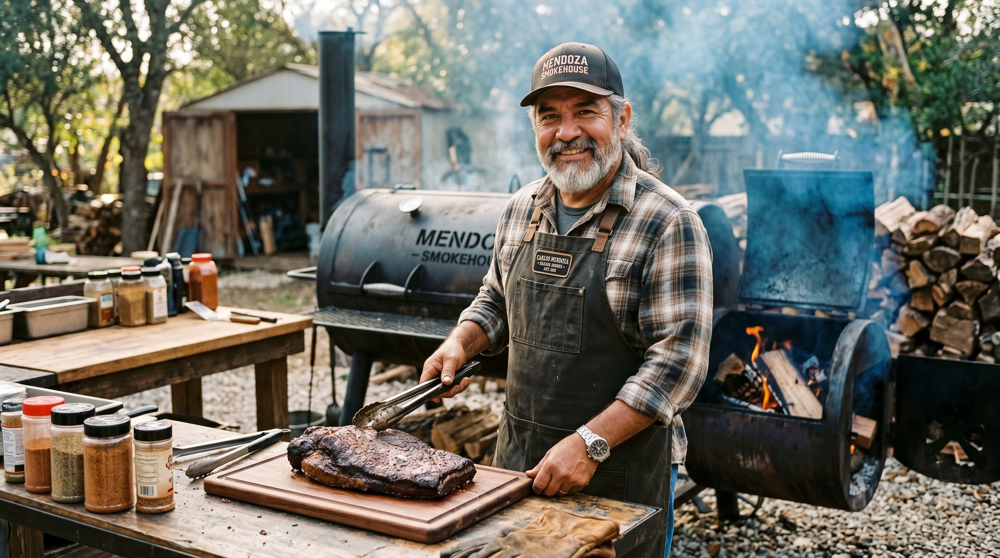
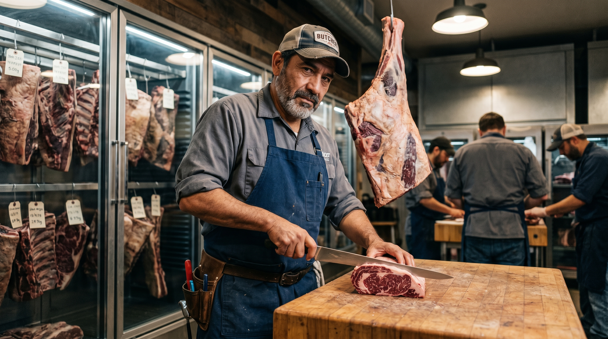
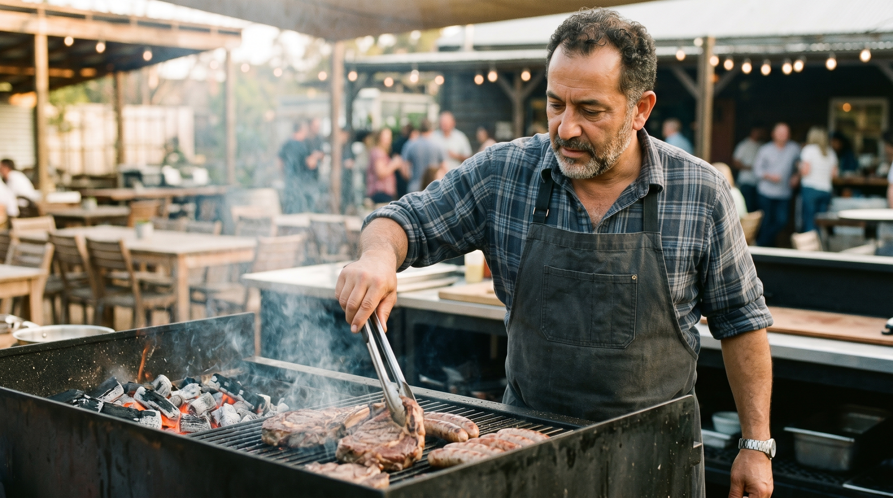
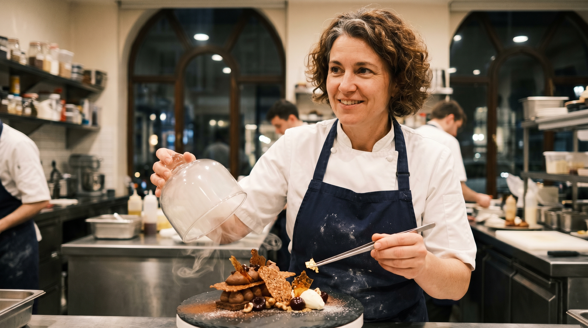

Restaurante - Fuego & Brasa
La inspiración detrás del uso del carbón y la evolución del concepto.
Nuestra Historia
Fuego & Brasa nació de un recuerdo de la infancia: las reuniones familiares de los domingos alrededor del fuego, donde el tiempo se detenía y la comida se convertía en un ritual. Lo que comenzó como un pasatiempo entre amigos y maestros parrilleros, pronto se transformó en el deseo de compartir esa misma experiencia con nuestra ciudad.
Para nosotros, el carbón no es solo un combustible; es el ingrediente secreto que define nuestra identidad. Cada trozo de leña seleccionada y cada chispa que se enciende en nuestras cocinas rinden homenaje a la cocina rústica y honesta. No buscamos apresurar los procesos; creemos firmemente que los mejores sabores requieren paciencia, precisión y un respeto absoluto por la materia prima.

Nuestra Filosofía
MISIÓN
"Ofrecer una experiencia gastronómica inolvidable alrededor del fuego, combinando cortes de carne de la más alta calidad con el auténtico sabor del carbón y una hospitalidad excepcional que haga sentir a cada cliente como en casa."
VISIÓN
"Consolidarnos como el restaurante parrillero referente de la región, reconocido por nuestra constante evolución culinaria, el respeto absoluto a las técnicas tradicionales de asado y el compromiso inquebrantable con la excelencia en el servicio."
VALORES
Tradición: Respeto por los procesos lentos y los sabores auténticos.
Hospitalidad: Servicio cálido y transparente en cada mesa.
Calidad: Selección rigurosa de cada ingrediente y materia prima.
Las manos detrás del fuego
"Detrás de cada corte perfecto y de cada aroma ahumado que llega a tu mesa, hay un equipo de profesionales apasionados por el arte del fuego vivo. Conoce a los maestros parrilleros y cocineros que combinan técnica, tradición y respeto por los ingredientes para transformar cada cena en una experiencia inolvidable."

- Nombre: Mateo Benítez
- Puesto: Chef Ejecutivo & Maestro Parrillero
- Descripción: Con más de 15 años de experiencia liderando cocinas de brasas. Es el guardián de las recetas secretas y el encargado de seleccionar minuciosamente cada corte de carne.

- Nombre: Carlos Mendoza
- Puesto: Maestro Ahumador
- Descripción: Experto en el manejo de maderas aromáticas como el algarrobo y el manzano. Domina los tiempos de cocción lenta para lograr texturas que se deshacen en la boca.

- Nombre: Javier Ortiz
- Puesto: Jefe de Carnicería & Maduración
- Descripción: Responsable de la precisión en cada corte y de supervisar el proceso de maduración en seco (dry-aged), asegurando la máxima ternura y sabor.

- Nombre: Luis Silva
- Puesto: Parrilero Profesional
- Descripción: Domina el control de la temperatura y el punto exacto de la carne sobre el carbón vivo. Su disciplina asegura que cada plato salga perfecto.

- Nombre: Elena Rostova
- Puesto: Chef Pastelera
- Descripción: Encargada de cerrar la experiencia con broche de oro. Creadora de postres artesanales únicos que incorporan sutiles técnicas de ahumado y texturas crujientes.